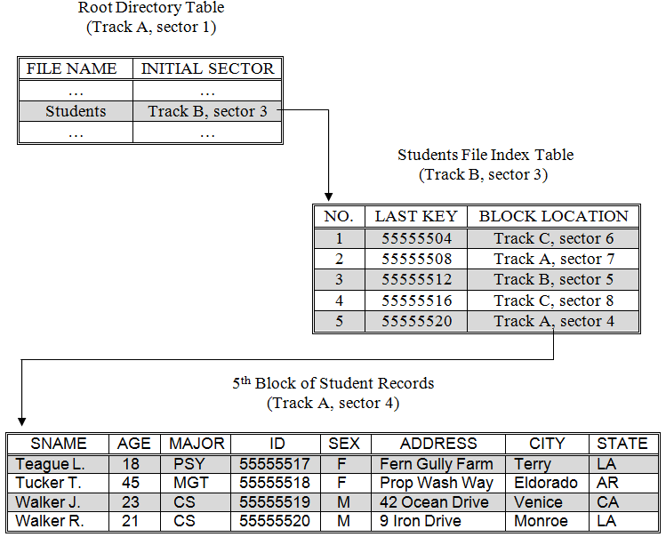

The final type of file storage technique we will examine is indexed storage. Under indexed storage, the first sector of a file contains an index table that holds the track and sector number of all other sectors of the file. In order to read an indexed file; this first sector must be retrieved – by referring to the file’s entry in the root directory. The index table is then used to determine the locations of the other sectors that comprise the file. These sectors can then be retrieved one at a time. With indexed storage there is no need for the sectors that actually hold the record blocks to also contain “next sector” addresses.
While it should be clear that indexed storage would work – in the sense that organizing data in this way would provide all of the required information to allow files to be stored and retrieved – it would probably not be used very often if it had no clear advantage over linked storage. This is true because indexed storage suffers from the same retrieval time problems as linked storage and has the additional disadvantage of requiring an extra data block to hold the file’s index table.
However, indexed storage is in fact very popular because in addition to supporting the sequential access provided by both contiguous and linked file storage techniques it also allows for fast access to the individual records of a file based on a “key”.
Most information retrieval transactions require that a particular record be retrieved (e.g., an employee record, or a student record) given that record’s key (e.g., an employee name or student ID number). With either contiguous or linked storage the only way to get a particular record, such as the record with key 55555519, is to walk through the file one sector at a time until the block with that record is encountered. If the file were long, say a 10,000 record student file, this process could be very time consuming.
An illustration of the indexed file storage technique
Indexed retrieval is able to overcome this problem in the following way. A key is associated with each record of the file and the individual records are ordered according to those keys. For example, a file of student records could be sorted based on a student ID key. Records are blocked together in the standard way and written onto disk a sector at a time. However, a copy of the key to the last record in a block will be stored in the index table along with the track and sector address of that block.
The index table of a student file composed of 20 records, sorted by student ID number, and stored four records per block is illustrated in . Once the Root Directory has been loaded into memory, only two read operations are required to retrieve any particular record from the students file: one read to retrieve the file’s index table, and a second read to retrieve the file block containing the record of interest.
The advantage of indexed storage can be seen by examining the number of reads required to access the record of student number 55555519. Under either linked or contiguous storage, all five sectors of the file must be read in order to retrieve this record, compared to the two reads required of indexed. Of course, with indexed storage a program will have to scan the index table once it has been retrieved from disk, in order to determine which sector contains the desired record, and this will take some time. But since computers can perform billions of instruction per second, this time will be negligible in comparison to the disk access time.
The larger the size of a file, the greater the savings realized by using the indexed storage technique. Imagine a file of 10,000 student records stored 10 records per block. Such a file would require 1,000 sectors (and a disk much larger than the one we have been using in our illustrations). In order to retrieve the last record in the file, 1,000 individual read operations would be required when using either linked or contiguous storage, as opposed to only two operations when using the indexed approach. Hence, we would expect indexed retrieval of this particular record to take place approximately 500 times faster than linked access.
To summarize, contiguous storage is the simplest and fastest technique for reading an entire file in sequential order due to the fact that all of the records of the files are stored in physically adjacent sectors minimizing the seek and rotational latencies. This advantage is offset by the need to perform costly defragmentation operations in order to keep free sectors grouped together. Both linked and indexed storage allow all of the sectors of a drive to be used for storing files since they do not require that the data blocks making up a file be physically located in adjacent sectors. Linked storage is somewhat more space efficient than indexed, since indexed requires one additional data block per file to hold the file’s index table. The primary advantage of indexed storage over linked and contiguous is that it enables access to individual records in a file using only two read operations. To improve retrieval times when reading linked and indexed files sequentially defragmentation can be performed.